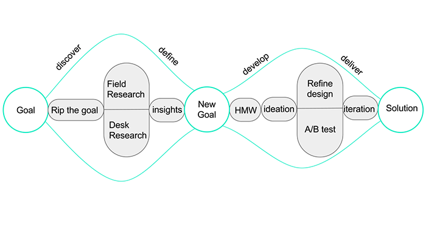
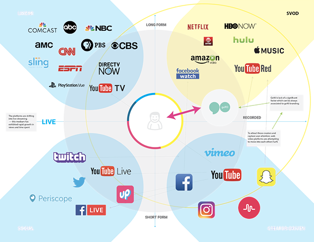
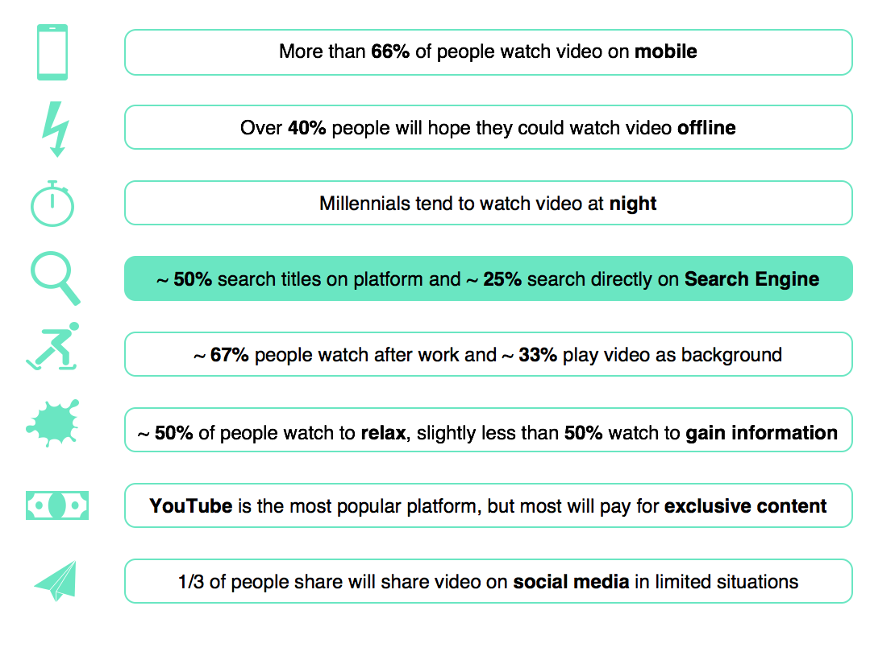
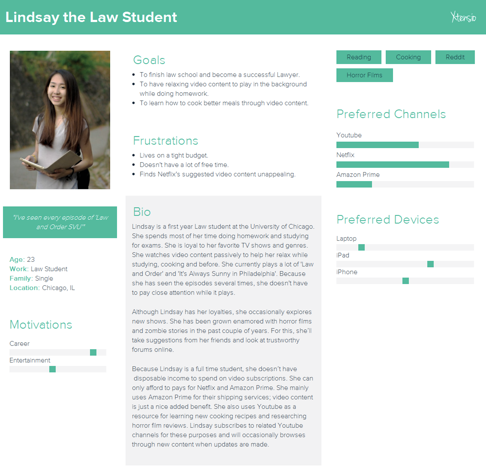
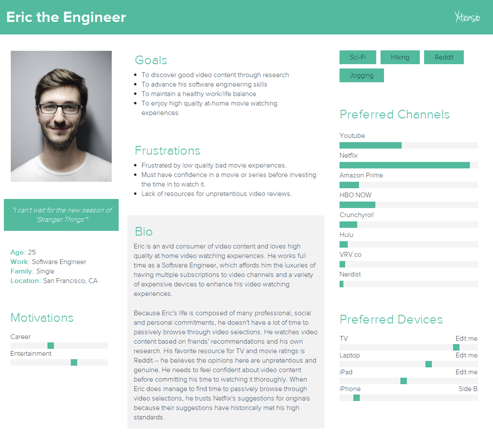
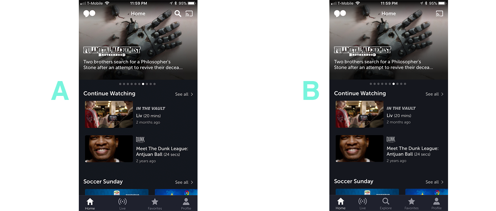
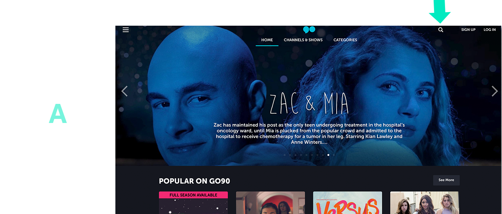
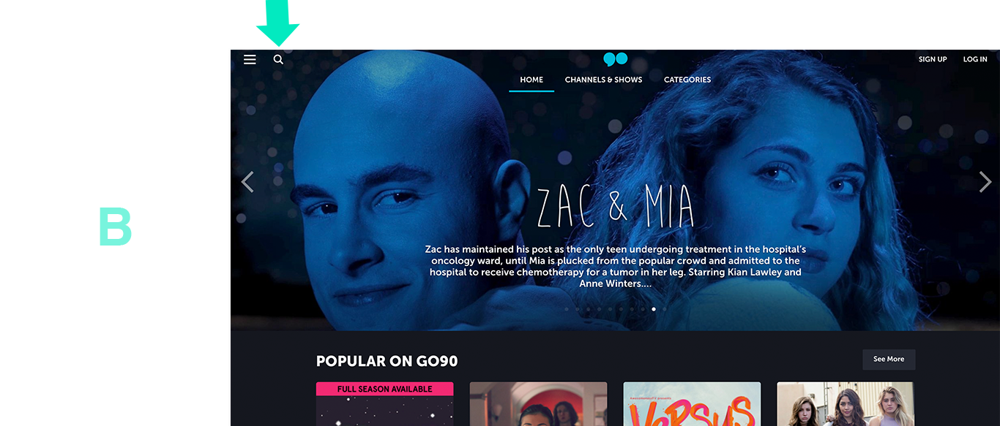

Verizon - Video Streaming on GO90
The Team
Cynthia Yue - UX Designer
Yicheng Zhu - Project Manager, UX Designer
Zhengnan Zhao - Visual Designer
Yingjie Ding - Data Analyst
Verizon's GO90 Platform
We were recruited by Verizon’s Open Innovation team to conduct user research on video consumption habits for their video streaming platform, GO90.
Double Diamond Method:
Our application of the Double Diamond method
Goal
Increase user activity from millennials on the GO90 platform.
Rip the Goal
The process starts with us asking a single question that is fundamental to our goal: “How do people consume video content?” We then deconstructed our question into three main categories: People, Consumption and Video Content. As a team, we continued formulating questions that are relevant to each category.

Synthesized notes
This enabled us to achieve a holistic understanding of the circumstances surrounding an individual’s video watching experience. From here, we identified key questions we needed to focus on in the research phase.
Research
Carried out in two parts: Field Research and Desk Research.
Field Research consisted of 2 carefully conducted online surveys that collected over 200 responses and one-on-one interviews with 12 participants.
Survey question mapping
Desk Research involved analyzing existing research and literature on the video streaming industry. We examined competitors’ products and recorded our experiences with them.
Desk research diagram
Key Findings
From data collected in our surveys, we were able to quantify and highlight key findings:
Key findings graph
Using both survey and interview data, we created two personas to represent our key demographics:
Lindsay the Lawyer persona
Eric the Engineer persona
New Goal
Improve content discoverability and increase GO90 user engagement
HMW (How Might We?) & Design Ideation
How might we improve the design? Based off of our findings, our team came up with a handful of possible solutions to meet our goal.
How might we improve internal search?
Finding: 50% - 61% of users search for specific titles within a video platform.
Solution: place search bar in a location that is more consistent with our competitors. Our personas consume video content on multiple platforms. Having search function in a familiar location will reduce friction when users attempt to search.
UX heuristics evaluation
How might we improve external search?
Finding: 25% search directly on Search Engine.
Solution: Create better descriptions for search engines. Ensure that descriptions accurately describe each piece of content. Relevant descriptions will facilitate a seamless user experience.
GO90 search results
How might we encourage browsing and increase engagement on the GO90 platform?
Finding: Interviews revealed that users tend to turn to reliable sources for video content suggestions, such as friends, forums and social media.
Solutions: bring content suggestions above the fold to keep users stimulated, engaged and encourage activity. Collecting more data on user activity will allow the team to create more personalized experiences.
Redesign mockup
Refine Design and A/B Test
A/B testing: ‘How might we improve internal search?’
For both desktop and mobile: Version A features a new design with the search function in a more prominent location – one that is more consistent with competitors’ products. Version B features the original design.

Mobile redesign
Desktop:
Desktop redesign version A

Desktop redesign version B
The results
Conducting usability tests on 16 participants revealed that moving the search function reduces the average time it takes to locate the search function by an average of 15 seconds.
Looking Forward
Because our initial a/b tests showed compelling results, our
recommendation would be to continue the tests with a larger volume of
participants to ensure results are statistically significant. The redesigns
that were tested showed minimal changes, which was done intentionally to
isolate the misplaced search function and identify that element as a compromise
to a seamless user experience.
Ultimately, the goal is to improve content discoverability and increase
user engagement on the GO90 platform. Our research shows that GO90’s target audience is largely
motivated to consume very specific video content – they know what they want to watch before searching for it. The platform can benefit from flushing out the proposals made in the design ideation portion of our project, which in addition to moving the search function also includes Search Engine Optimization and redesigning key pages to include more content selection options above the fold.